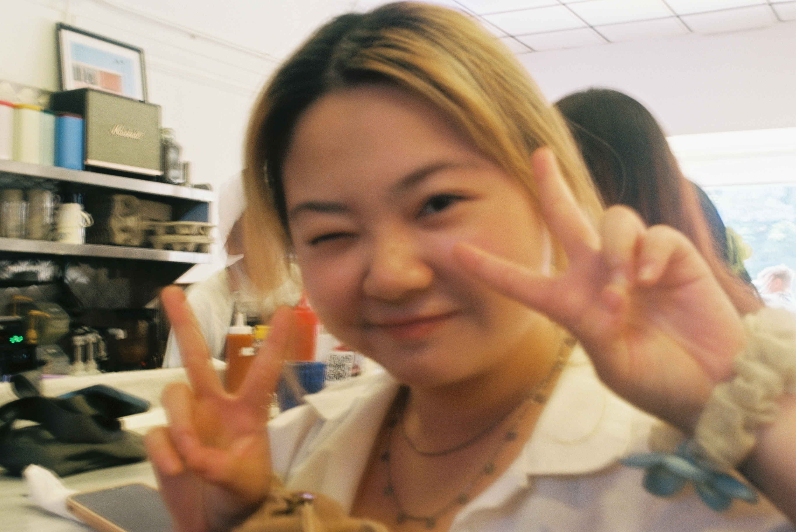

<!DOCTYPE html>
<html lang="en">
<head>
    <meta charset="UTF-8">
    <meta name="viewport" content="width=device-width, initial-scale=1.0">
    <title>Allison Lu</title>

    <!--Img size-->
    <style>
        /* Optional: Add some basic styling for the gallery */
        .image-gallery {
            display: flex;
            flex-wrap: wrap;
            gap: 20px;
        }
        .image-gallery img {
            max-width: 30%;
            height: auto;
        }
        /* Apply a rotation based on the unique ID */
        #rotateSpecificImage {
            transform: rotate(90deg);
        }
    </style>
    <link rel="stylesheet" href="styles.css">
</head>
<body>
    <!-- Your content goes here -->
    <!-- Include the navigation bar using JavaScript -->
    <iframe src="../components/navbar.html" frameborder="0" width="100%" height="60"></iframe>
</body>
</html>


<header>
    <h1>Documentation</h1>
</header>


<nav>
    <ul>
        <li><a href="journey.html">Journey</a></li>
        <li><a href="adventure.html">Adventure</a></li>
        <li><a href="about.html">About</a></li>
    </ul>
</nav>


<section id="Friends-family">
    <h2>Family and Friends</h2>
    <h3>Spreading happy seeds</h3>
    <p>I wouldn't be here without my family and friends. They have played such a pivotal role in my personality.</p>
    <p>Nothing like sharing happiness with one another</p>
    <h3>Documentation with loved ones</h3>
    <!-- Inserting images using the img tag -->
</section>
    <h3>Documentation with loved ones</h3>
    <!-- Gallery using a div container -->
    <div class="image-gallery">
        
        
        
        
        
        
        
        
        <!-- Add more images as needed -->
    </div>
</section>

<section id="Scenery">
    <h2>Landscape</h2>
    <p>
        I've been given the opportunity to travel around the world. I wanted to share my exerience and joy with others.
        Leaving home base and just exploring, has given me time to self-reflect and view the world in a different light.
        From these photos, I hope to create the idea that in the grand scheme of things, life is short and we should all take the moment to appreiciate it.
    </p>
    <!-- Gallery using a div container -->
    <div class="image-gallery">
        
        
        
        <!-- Add more images as needed -->
    </div>
    
</section>


<footer>
    <p>Contact: allisonlu100@gmail.com</p>
    <p>Follow me on <a href="https://instagram.com/wholu.moo" target="_blank">instagram</a></p>
</footer>
